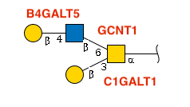
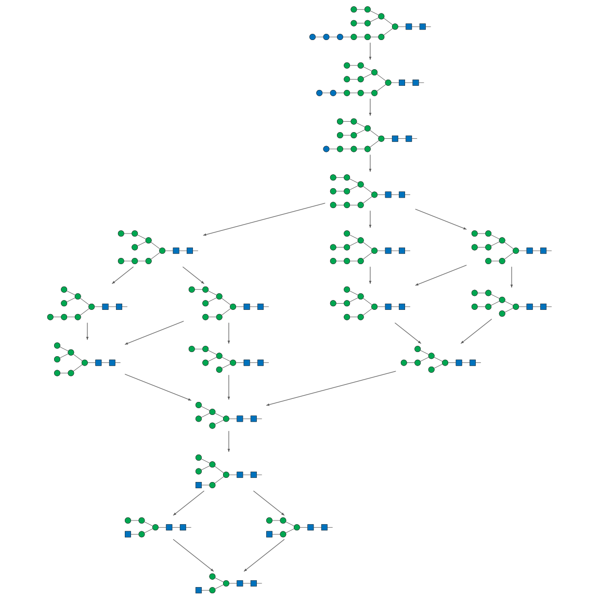

Get Started with glyenzy
glyenzy.RmdGlycan biosynthesis is built from many enzyme-specific reaction steps. Glycosyltransferases and glycoside hydrolases each have their own substrate preferences, linkage rules, and residue specificities, so a glycan structure often carries useful clues about the enzymes that could have produced it.
glyenzy provides tools for working with those enzyme
rules in R. You can use it to identify candidate enzymes for an existing
glycan, trace plausible biosynthetic paths, or predict products from
enzyme-driven reactions.
library(glyrepr)
library(glyenzy)
library(igraph)
#>
#> Attaching package: 'igraph'
#> The following objects are masked from 'package:stats':
#>
#> decompose, spectrum
#> The following object is masked from 'package:base':
#>
#> unionQuick heads-up: glyenzy builds on
glyrepr, glyparse, and glymotif.
You don’t need to master these packages to get started, but they are
useful when you want more control over glycan representation, parsing,
or motif matching. Also, this vignette assumes you’re comfortable with
IUPAC-condensed notation. If that notation is new to you, start with this
tutorial.
Your First Taste of Glycan Engineering
We’ll start with a small O-glycan example:

In the diagram, each glycosidic bond is labeled with its responsible enzyme.
Here is the same glycan in IUPAC-condensed notation:
glycan <- "Gal(b1-4)GlcNAc(b1-6)[Gal(b1-3)]GalNAc(a1-"find_enzyme() returns the enzymes that may be involved
in building a glycan:
find_enzyme(glycan)
#> [1] "B4GALT1" "B4GALT2" "B4GALT3" "B4GALT4" "B4GALT5" "B4GALT6" "C1GALT1"
#> [8] "GCNT1" "GCNT3" "GCNT4" "GALNT1" "GALNT2" "GALNT3" "GALNT4"
#> [15] "GALNT5" "GALNT6" "GALNT7" "GALNT8" "GALNT9" "GALNT10" "GALNT11"
#> [22] "GALNT12" "GALNT13" "GALNT14" "GALNT15" "GALNT16" "GALNT17" "GALNT18"
#> [29] "GALNT19"This includes the enzymes shown in the diagram, along with B4GALT1/2/3/4 as additional candidates. We’ll return to why those enzymes appear later.
You can also ask what products are formed when an enzyme acts on a glycan. Here is ST3GAL1 applied to the same structure:
apply_enzyme(glycan, "ST3GAL1")
#> <glycan_structure[1]>
#> [1] Neu5Ac(a2-3)Gal(b1-3)[Gal(b1-4)GlcNAc(b1-6)]GalNAc(a1-
#> # Unique structures: 1The function returns a glyrepr::glycan_structure()
vector. In this case, a sialic acid is attached to the β1-3 Gal, while
the β1-4 Gal is not modified. That is because ST3GAL1 recognizes
“Gal(β1-3)GalNAc(α1-” as its substrate.
The next sections walk through the main workflows in a little more detail.
Tracing Glycan Origins
For an existing glycan, glyenzy can help answer four
common questions:
-
Which enzymes? Which glycosyltransferases and
glycoside hydrolases were involved? (
find_enzyme()) -
How often? How many times could each enzyme have
acted? (
count_enzyme()) -
In what order? What biosynthetic sequence could
produce the structure? (
trace_biosynthesis()) -
Specifically? Which residues were added by which
enzymes? (
match_enzyme())
Behind the scenes, glyenzy has catalogued the reaction rules of 149
enzymes in its enzyme database. Use enzyme("MGAT3") to
inspect a specific enzyme rule.
Combined with the sophisticated motif-matching algorithms from
glymotif, these rules can be used to reconstruct plausible
biosynthetic paths.
You’ve already seen find_enzyme(), which returns
candidate enzymes. For more targeted checks:
-
have_enzyme()answers “Was enzyme X involved?” with a simple yes/no -
count_enzyme()returns how many times an enzyme is inferred to act -
match_enzyme()identifies the residues added by a specific enzyme
You will also find view_enzyme() useful for visualizing
the residues added by an enzyme on a glycan cartoon.
These summaries can be useful in multiomics analysis, where glycan structures are compared with enzyme expression levels.
trace_biosynthesis() reconstructs a plausible
biosynthetic path:
path <- trace_biosynthesis(glycan)
path
#> IGRAPH 81de546 DN-- 4 10 --
#> + attr: name (v/c), enzyme (e/c), step (e/n)
#> + edges from 81de546 (vertex names):
#> [1] GalNAc(a1- ->Gal(b1-3)GalNAc(a1-
#> [2] Gal(b1-3)GalNAc(a1- ->Gal(b1-3)[GlcNAc(b1-6)]GalNAc(a1-
#> [3] Gal(b1-3)GalNAc(a1- ->Gal(b1-3)[GlcNAc(b1-6)]GalNAc(a1-
#> [4] Gal(b1-3)GalNAc(a1- ->Gal(b1-3)[GlcNAc(b1-6)]GalNAc(a1-
#> [5] Gal(b1-3)[GlcNAc(b1-6)]GalNAc(a1-->Gal(b1-4)GlcNAc(b1-6)[Gal(b1-3)]GalNAc(a1-
#> [6] Gal(b1-3)[GlcNAc(b1-6)]GalNAc(a1-->Gal(b1-4)GlcNAc(b1-6)[Gal(b1-3)]GalNAc(a1-
#> [7] Gal(b1-3)[GlcNAc(b1-6)]GalNAc(a1-->Gal(b1-4)GlcNAc(b1-6)[Gal(b1-3)]GalNAc(a1-
#> + ... omitted several edgesThe result is a directed igraph object. Each vertex
represents a glycan structure, and each edge represents an enzymatic
step. If more than one enzyme is involved in an enzymatic step, multiple
edges are created between the two vertices.
Here is the same workflow with a more complex N-glycan:
glycan <- "GlcNAc(b1-2)Man(a1-3)[Man(a1-6)]Man(b1-4)GlcNAc(b1-4)GlcNAc(b1-"
path <- trace_biosynthesis(glycan)
plot(
path,
layout = layout_as_tree(path),
vertex.label = NA,
vertex.size = 10,
edge.arrow.size = 0.3,
margin = 0
)
Predicting Glycan Products
glyenzy can also predict products from a starting glycan
and one or more enzymes. We’ll start with a simple O-glycan core and
then move to a larger example.
# The GalNAc core of an O-glycan
glycan <- "GalNAc(a1-"First, apply C1GALT1:
apply_enzyme(glycan, "C1GALT1")
#> <glycan_structure[1]>
#> [1] Gal(b1-3)GalNAc(a1-
#> # Unique structures: 1This produces the Core 1 O-GalNAc glycan.
Here’s how apply_enzyme() works: give it a glycan and an
enzyme, and it returns all possible products. When multiple outcomes are
possible, you’ll get them all bundled in a
glyrepr::glycan_structure() vector.
# A bi-antennary agalactosylated N-glycan
glycan <- "GlcNAc(b1-2)Man(a1-3)[GlcNAc(b1-2)Man(a1-6)]Man(b1-4)GlcNAc(b1-4)GlcNAc(b1-"
apply_enzyme(glycan, "B4GALT1")
#> <glycan_structure[2]>
#> [1] Gal(b1-4)GlcNAc(b1-2)Man(a1-3)[GlcNAc(b1-2)Man(a1-6)]Man(b1-4)GlcNAc(b1-4)GlcNAc(b1-
#> [2] Gal(b1-4)GlcNAc(b1-2)Man(a1-6)[GlcNAc(b1-2)Man(a1-3)]Man(b1-4)GlcNAc(b1-4)GlcNAc(b1-
#> # Unique structures: 2Both antennae can be galactosylated, giving two distinct products. This is a simple example of biochemical branching.
Multi-Step Product Growth
For multi-step reactions, provide one or more starting glycans and a
set of enzymes. glyenzy will expand the products over
successive reaction steps.
Use grow_glycans() for the full experience, or
grow_glycans_step() if you want one reaction step at a
time:
# A bi-antennary N-glycan with three enzymes
grow_glycans(glycan, c("B4GALT1", "ST3GAL3", "MGAT3"))
#> ⠙ Step 4/5 | ■■■■■■■■■■■■■■■■■■■■■■■■■ 80% | current number of glycans:…
#> ⠙ Step 5/5 | ■■■■■■■■■■■■■■■■■■■■■■■■■■■■■■■ 100% | current number of glycans:…
#> <glycan_structure[32]>
#> [1] GlcNAc(b1-2)Man(a1-3)[GlcNAc(b1-2)Man(a1-6)]Man(b1-4)GlcNAc(b1-4)GlcNAc(b1-
#> [2] Gal(b1-4)GlcNAc(b1-2)Man(a1-3)[GlcNAc(b1-2)Man(a1-6)]Man(b1-4)GlcNAc(b1-4)GlcNAc(b1-
#> [3] Gal(b1-4)GlcNAc(b1-2)Man(a1-6)[GlcNAc(b1-2)Man(a1-3)]Man(b1-4)GlcNAc(b1-4)GlcNAc(b1-
#> [4] GlcNAc(b1-2)Man(a1-3)[GlcNAc(b1-4)][GlcNAc(b1-2)Man(a1-6)]Man(b1-4)GlcNAc(b1-4)GlcNAc(b1-
#> [5] Gal(b1-4)GlcNAc(b1-2)Man(a1-3)[Gal(b1-4)GlcNAc(b1-2)Man(a1-6)]Man(b1-4)GlcNAc(b1-4)GlcNAc(b1-
#> [6] Gal(b1-4)GlcNAc(b1-2)Man(a1-3)[GlcNAc(b1-4)][GlcNAc(b1-2)Man(a1-6)]Man(b1-4)GlcNAc(b1-4)GlcNAc(b1-
#> [7] GlcNAc(b1-2)Man(a1-3)[Gal(b1-4)GlcNAc(b1-4)][GlcNAc(b1-2)Man(a1-6)]Man(b1-4)GlcNAc(b1-4)GlcNAc(b1-
#> [8] Gal(b1-4)GlcNAc(b1-2)Man(a1-6)[GlcNAc(b1-2)Man(a1-3)][GlcNAc(b1-4)]Man(b1-4)GlcNAc(b1-4)GlcNAc(b1-
#> [9] Neu5Ac(a2-3)Gal(b1-4)GlcNAc(b1-2)Man(a1-3)[GlcNAc(b1-2)Man(a1-6)]Man(b1-4)GlcNAc(b1-4)GlcNAc(b1-
#> [10] Neu5Ac(a2-3)Gal(b1-4)GlcNAc(b1-2)Man(a1-6)[GlcNAc(b1-2)Man(a1-3)]Man(b1-4)GlcNAc(b1-4)GlcNAc(b1-
#> ... (22 more not shown)
#> # Unique structures: 32In this example, each enzyme contributes a different reaction:
- B4GALT1: Adds β1-4 Gal to GlcNAc branches
- ST3GAL3: Adds α2-3 sialic acid
- MGAT3: Adds a bisecting GlcNAc to the core mannose
The result is a collection of 32 different glycans, including the original starting structure.
The Fine Print
Here are the main caveats to keep in mind when using
glyenzy:
Species and Scope
glyenzy is currently a human-centric package, focusing specifically on N-glycans and O-glycans. If you’re working with GAGs, glycolipids, or glycans from mouse, plants or insects, the results might not be accurate.
Inclusive Candidate Calls
Our algorithms are intentionally inclusive – they assume that all possible isoenzymes capable of catalyzing a reaction might be involved. This means you should interpret results with a grain of salt.
For instance, when glyenzy spots the motif “Neu5Ac(α2-3)Gal(β1-”, it’ll flag both ST3GAL3 and ST3GAL4 as potential culprits. In reality, tissue specificity and other factors might mean only one is actually active. Treat the output as a list of plausible candidates rather than a definitive assignment.
Concrete Residues Only
glyenzy requires precise residues – it only works with concrete residues like “Glc” and “GalNAc”, not generic ones like “Hex” or “HexNAc”. If your data uses generic terms, you’ll need to resolve them before using these functions.
Substituents: Not Yet Supported
Modifications like sulfation and phosphorylation aren’t supported
yet, and they might actually break the algorithms. If your glycans are
decorated with these extras, use
glyrepr::remove_substituents() to get clean, analysis-ready
structures.
Complete Structures Required
Incomplete or partially degraded glycan structures can lead glyenzy astray. Make sure your input represents the full, intact glycan for reliable results.
Biosynthetic Starting Points
glyenzy uses specific starting points for biosynthetic reconstruction:
- N-glycans: Begin with the Glc₃Man₉GlcNAc₂ precursor (post-OST transfer)
- O-GalNAc glycans: Start with GalNAc(α1-
- O-GlcNAc glycans: Start with GlcNAc(b1-
- O-Man glycans: Start with Man(a1-
- O-Fuc glycans: Start with Fuc(a1-
- O-Glc glycans: Start with Glc(b1-
Technical Notes
glyenzy relies on a few related glycoverse packages:
-
glyrepr: The foundation for representing glycan structures -
glyparse: The parser for IUPAC-condensed notation -
glymotif: The motif-matching engine for structural patterns
All enzymes live as enzyme() objects (technically
glyenzy_enzyme S3 class instances). Call
enzyme("YOUR_FAVORITE_ENZYME") to inspect a specific enzyme
rule.